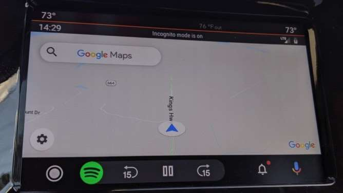

Windows Defender was recently boosted by an industry-respected AV Test report that gave it a perfect rating alongside F-Secure Safe 17 and Norton Security 22 for home antivirus protection. The differentiator is that Windows Defender is a free solution that comes installed as part of Windows 10. This was excellent news for both Microsoft, which has been working hard to make Defender a top-notch security offering, and users who can get the best protection out there without splashing the cash. Until that is, Microsoft went and broke it with an update. How did Microsoft break Windows Defender? To resolve a coding flaw in the Windows System File Checker (SFC) that caused an error when checking for system files that needed repair, Microsoft released an update to Windows Defender on September 16. That fix, Windows Defender version 4.18.1908.7, unfortunately introduced another, just as serious, scanning problem: both quick and full scans stopped working after inspecting only a handful of files. I confirmed this myself by running a full Windows Defender scan which, instead of taking up to an hour to complete, took a few seconds and reported it had only scanned ten files. A Microsoft spokesperson confirmed the issue and said: "Only manual or scheduled scans conducted by administrators were temporarily impacted and we are working to resolve it." This issue is very concerning from a security perspective; users need to have trust in the security solution they are using and updates that break things also break this trust, or at least erode it. However, it should be pointed out that the real-time scanning of endpoints wasn't impacted by the update, and users could still use the custom scanning feature which continued to work as intended. Today In: Innovation What should you do now? The good news is that Microsoft has already confirmed it has fixed the problem, almost as quickly as it created it, with another update. The fix can be found in a security intelligence update for Windows Defender antivirus. This should automatically update your Windows Defender definitions and resolve the scanning issue. To be sure, however, it is recommended that you check for updates in the Windows Security Virus & Threat Protection screen to trigger a download of the latest version. PROMOTED What you shouldn't do now It's essential to keep things in perspective here, which means not jumping to a knee-jerk conclusion that Windows Updates are allbad and should, therefore, be ignored where at all possible. Certainly when it comes to the security side of the updates fence, and that's where I firmly stand, not updating is poor logic. Security updates do make your systems more secure, and even though they do go wrong now and then the vast majority are seamless improvements to the security posture of your machine. By not updating you are leaving yourself open to a much higher risk of something going seriously wrong, such as a breach or other compromise than updating exposes you to. Perhaps I should have added a "What Microsoft should do now" heading, with the advice that it needs to get on top of these update issues before user trust in them is diminished to the point of no return. I appreciate it's a challenging and complicated process, but an organization the size of Microsoft with all those years of experience really should do better.
Go to Main Header(CNN)"What happened to Jesse?" That's the question that "Breaking Bad" creator Vince Gilligan told The Hollywood Reporter put him on the path to his latest project. "El Camino: A Breaking Bad Movie" is set to premiere October 11 on Netflix and in theaters in 68 cities before it airs on the original show's home network of AMC early next year. Gilligan told THR he felt there was more story to tell after his hit series starring Bryan Cranston as teacher-turned-drug-dealer Walter White and Aaron Paul as his right hand man, Jesse Pinkman, ended following five seasons in 2013. He was especially intrigued by the thought of what happened with Paul's character, Jesse. "You see him driving away. And to my mind, he went off to a happy ending," Gilligan said. "But as the years progressed, I thought, 'What did that ending - let's just call it an ending, neither happy, nor sad - what did it look like?' "For his part, Paul said he was good after the finale aired. "I really loved Jesse," the actor said. "I knew him better than anyone, but it was a big weight off of my shoulders to hang up the cleats and walk away. I thought it was goodbye, and I was OK with that." Like many others Paul thought the ending of the series was perfect, so "why mess with that?"But his loyalty to Gilligan ("I would follow Vince into a fire") helped draw him back Paul told the publication. "It was so easy for me to just jump into where Jesse's at mentally, emotionally, because I lived and breathed everything he went through and then some, and so, honestly, it felt like a part of me had gone through that as well," Paul said. "All I had to do was just memorize these words and then play them out when they yelled 'action.' " Gilligan has a warning for newbie's to the show,: "If, after 12 years, you haven't watched 'Breaking Bad,' you're probably not going to start now." "If you do, I hope that this movie would still be engaging on some level, but there's no doubt in my mind that you won't get as much enjoyment out of it," he said. "We don't slow down to explain things to a non-'Breaking Bad' audience. I thought early on in the writing of the script, 'Maybe there's a way to have my cake and eat it too. Maybe there's a way to explain things to the audience.' If there was a way to do that, it eluded me."
Go to Main Header It took a significant location tracking scandal for Google to actually do something about the user's privacy when it comes to location tracking. After a report called Google out for misleading users who thought their location data wouldn't be collected because of the way they set up location permissions, Google came up with fixes. Now you can stop Google from tracking you, except for those apps where location data is paramount - think Google Maps and Waze. Also, Google added better privacy features in Android 10, which deal with location data as well - freaking out Facebook in the process. On top of that, Google is about to make Google Maps even more private, if that's something you want from the app. The company is bringing Incognito Mode to Google Maps, and the feature is already in testing. Don't Miss How is this $37 hidden spy camera on Amazon even legal? One way to use Google Maps and try to limit the location data it collects is by actually signing out of your Google account. But that's hardly convenient, and that's where Incognito Mode will come in handy. You'll be able to turn the feature on, just like you might do it for Chrome or YouTube, to avoid your searches or navigation data to be associated with your primary Google account. The feature was promised some four months ago at Google I/O, so we knew it was already in the works, but Android Police reports that it's only now rolling out to some members of the Google Maps Preview test. Incognito Mode will work everywhere Google Maps is available, including Android Auto. The image below shows the mode activated in the car. You'll notice the black status bar which reads "Incognito Mode is on. Image Source: Android Police The following animation shows how switching to Incognito Mode works on an Android phone. You just have to select the option from your Google account avatar, at which point a black status bar will inform you that you're using the app incognito. Also, the locator marker will change from blue to dark to mark the change. You'll be able to switch back to the regular Maps experience whenever you feel like it. To get the feature right now, you'll need to have Preview Maps version 10.26 or later installed. That is if you're part of the Preview Maps test group. Otherwise, you'll have to wait a while for Google to release it more broadly
Go to Main Header